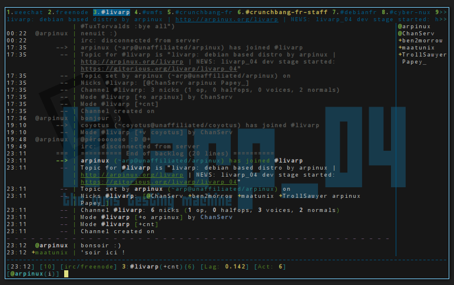

lang fr|gb

using irc with weechat
1. Start WeeChat
A recommended terminal emulator for X (but not mandatory) is rxvt-unicode (it has good UTF-8 support, and no problem with default keyboard bindings).
Run "weechat-curses" from your shell.
2. on-line help / options
WeeChat has help for all commands, just issue /help. To get help on a specific command, issue /help command.
To set options, use /set config.section.option value (where config is configuration name (weechat for core, or a plugin name), section the section of this configuration and option the option name).
WeeChat immediately uses the new value (you never need to restart WeeChat after changes to configuration).
You can use /set option with partial name and wildcard "*" at the beginning or end to display all options containing letters. For example:
/set
display all options (WeeChat and plugins)
/set weechat.*
display WeeChat options
/set irc.*
display IRC plugin options
You can display help for an option with /help, for example:
/help weechat.look.highlight.
All settings are saved when WeeChat ends (or with /save command to force a write of the options).
You can edit configuration files (*.conf) by hand and reload them by /reload command if you don’t want to use /set command.
3. Core vs plugins
WeeChat "core" is only used to display data on screen and interact with the user, that means weechat core without plugins is useless (faithful users: IRC was part of core for versions ≤ 0.2.6).
All network protocols like IRC are provided in separate plugins.
Use the /plugin command to list loaded plugins, you should see "irc" and other plugins in the list.
4. Create an IRC server
You can add an IRC server with /server command, for example:
/server add oftc irc.oftc.net/6667
As usual, help is available if you’re lost: /help server
5. Set custom IRC server options
WeeChat uses default values for all servers ("fall backs"), if you don’t specify a specific value for a server option. These default options are "irc.server_default.*".
For each server option, WeeChat uses its value if it is defined (not "null"). Otherwise WeeChat uses default value ("irc.server_default.xxx").
For example there’s default nicks (based on your un*x login), and you can override them for oftc server with following command:
/set irc.server.oftc.nicks "nick1,nick2,nick3,nick4,nick5"
To set username and realname:
/set irc.server.oftc.username "my user name"
/set irc.server.oftc.realname "Mon nom réel"
To enable auto-connect to server at startup:
/set irc.server.oftc.autoconnect on
To run a command after connection to server, for example to identify with nickserv:
/set irc.server.oftc.command "/msg nickserv identify xxxxxx"
To auto-join some channels when connecting to server:
/set irc.server.oftc.autojoin "#chan1,#chan2"
6. Connect to IRC server and auto-join channels
/connect oftc
This command can be used to create and connect to a new server without using /server command
By default, server buffers are merged with WeeChat core buffer. To switch between core buffer and server buffers, you can use ctrl-X.
7. Join/part IRC channels
/join #channel: join a channel
/part [quit message]: part a channel (keeping buffer open)
/close [quit message]: close server or channel buffer (/close is an alias for /buffer close)
8. Buffer/window management
A buffer is a component linked to a plugin with a number, a category, and a name. A buffer contains the data displayed on the screen.
A window is a view on a buffer. By default there’s only one window displaying one buffer. If you split screen, you will see many windows with many buffers at same time.
Commands to manage buffers and windows:
/buffer
/window
For example, to vertically split your screen into a small window (1/3 width), and a large window (2/3), use command:
/window splitv 33
9. Raccourcis clavier
WeeChat uses many keys by default. All these keys are in the documentation, but you should know at least some vital keys:
> alt + left/right arrows (or F5/F6): switch to previous/next buffer
> F7/F8: switch to previous/next window (when screen is split)
> F9/F10: scroll title bar
> F11/F12: scroll nicklist
> tab: complete text in input bar, like in your shell
> page up/down: scroll text in current buffer
> alt + A: jump to buffer with activity (in hotlist)
According to your keyboard and/or your needs, you can rebind any key to a command with /key command. A useful key is meta-k (alt-k) to find key codes.
For example, to bind meta-y (alt-y) to command /buffer close:
/key bind (press meta-k) (press meta-y) /buffer close
10. Plugins/scripts
On some distros like Debian, plugins are available via a separate package (like weechat-plugins). Plugins are automatically loaded when found (please look at the WeeChat documentation to load/unload plugins or scripts).
Many external scripts (from contributors) are available for WeeChat: http://www.weechat.org/scripts
You can manage scripts in WeeChat with command /script (see /help script for more info).
You can now use WeeChat and read FAQ/documentation for any other questions: http://www.weechat.org/doc